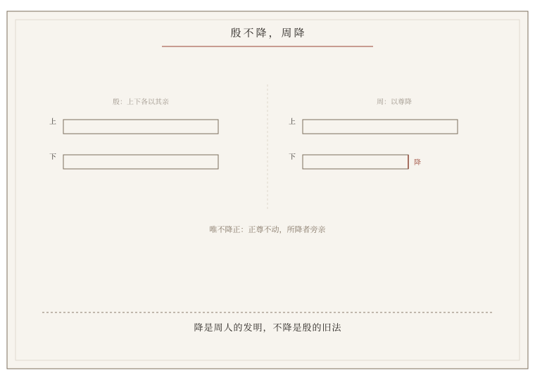

檀弓上 · 三·八十 · 第 283 课
縣子曰：「吾聞之，古者不降，上下各以其親。」滕伯文為孟虎齊衰，其叔父也；為孟皮齊衰，其叔父也。
说什么事：县子说：我听说古时候服制不降等，上下的亲疏各按本来的亲来服。滕伯文为孟虎服齐衰——孟虎是他的叔父；又为孟皮服齐衰——他是孟皮的叔父。
落在哪一层：服制之古今异。论「降」是周人的发明。
为何编在此位：上四节论服之无文、礼之三门槛，此节回头论服制的根本差异——殷不降、周降。与前 274 节的「引推」首尾相照。
【经】縣子曰：「吾聞之，古者不降，上下各以其親。」滕伯文為孟虎齊衰，其叔父也；為孟皮齊衰，其叔父也。
【注】古謂殷時也。上不降遠，下不降卑。伯文，殷時滕君也；爵為伯，名文。
【疏】此一节论古者著服上不降远、下不降卑之事。琐，县子名；据所闻而言也，「古者不降」所闻之事也。古者，殷时也。周礼以贵降贱、以適降庶，唯不降正耳；而殷世以上，虽贵不降贱也。「上下各以其亲」，不降之事也：「上」谓旁亲——族曾祖、从祖及伯叔之班族；「下」谓从子从孙之流。彼虽贱，不以己尊降之，犹各随本属之亲轻重而服之，故云「上下各以其亲」。庾蔚云：「上下犹尊卑也。正尊，周礼犹不降，则知所明者旁尊也；郑恐尊名乱于正尊，故变文言『远』也。」「滕伯」至「父也」：谓滕国之伯名文，为叔父孟虎著齐衰之服，其虎是滕伯文叔父也；「为孟皮齐衰，其叔父也」，谓滕伯为兄弟之子孟皮著齐衰之服，其滕伯是皮之叔父也。言滕伯上为叔父、下为兄弟之子，皆著齐衰，是「上不降远、下不降卑」也。
县子 鲁之知礼者，名琐。疏「琐，县子名」。
不降 不降等。降，减其服之等。
上下各以其亲 上辈下辈各按本来的亲属关系服。上，指旁亲长辈；下，指从子从孙。
滕伯文 殷时滕国之君，爵伯，名文。
孟虎 滕伯文的叔父。
孟皮 滕伯的兄弟之子，即滕伯为其叔父。
其叔父也（两见） 第一处说孟虎是滕伯的叔父；第二处说滕伯是孟皮的叔父。同一句话，指两个方向。
县子说：「我听说，古时候服制不降等，上辈下辈各按本来的亲疏来服。」滕伯文为孟虎服齐衰——孟虎是他的叔父；又为孟皮服齐衰——他是孟皮的叔父。
此节二十余字，讲的是一条制度史上的大分别：殷制「不降」，周制「降」。
「降」是周礼的核心技术之一：以贵降贱，以嫡降庶。一个人地位高了，他为本该服重的旁亲要减一等；一个人是嫡子，他为庶出的亲属也要减一等。降，就是把「尊尊」压在「亲亲」之上。
县子说古时不然：「上下各以其亲」——上辈也好、下辈也好，都按本来的亲来服，不减。滕伯文是国君，为叔父服齐衰、为兄弟之子服齐衰，两个方向都不降，正是「上不降远，下不降卑」。
注只一句断代：「古谓殷时也。」于是这一节就成了殷周之辨的一个具体证据。
第一层 滕伯那两个「齐衰」的分量 一个国君，为叔父服齐衰，是「上不降远」；为兄弟之子服齐衰，是「下不降卑」。上不因自己尊而减长辈之服，下不因自己尊而减晚辈之服。两个方向都不动，服制就还是按血亲算，不按爵位算。
周制不是这样。周制里，国君为本该服期的叔父，可能因尊而降；为兄弟之子，也可能因嫡庶而降。降，是周人把政治秩序织进血缘秩序的办法。
第二层 「唯不降正」的分寸 疏说得很准：「周礼以贵降贱、以適降庶，唯不降正耳。」周制虽降，但有一处不降——「正」，即正尊（父、祖父等直系之尊）。降的只是旁亲。这一句极要紧：周的降不是把血缘全让给政治，而是划了一条线：正尊不动，旁亲可降。
第三层 郑玄为什么把「上下」改说「远近」 疏引庾蔚：「正尊，周礼犹不降，则知所明者旁尊也。郑恐尊名乱于正尊，故变文言『远』也。」——注不说「上不降尊」而说「上不降远」，是怕「尊」这个字与「正尊」相混。一个字的选择，划清了两种尊。
这一层见注家的谨慎：改一个字，是为了不让读者把旁亲之尊误当直系之尊。
第四层 与 274 节首尾相照 274 论「引」与「推」，是服制的两个动作；283 论「降」与「不降」，是服制的两个时代。引推是同一时代内部的调节，降不降是不同时代之间的分别。两课相隔九节，一头一尾，把这一批的服制讨论收住了。
与今日何干 今人排座次、论亲疏，常常两套并用：一套按血缘，一套按职位。此节提醒：这两套本来是可以分开的，古人曾有过只按血缘的时代。周人把它们叠起来，是一种选择，不是天命。知道这是选择，才有重新安排的余地。
| 左 | 右 |
|---|---|
| 古者不降 | 殷时之制 |
| 上下各以其亲 | 各随本属之亲 |
| 上不降远 | 旁亲长辈 |
| 下不降卑 | 从子从孙 |
| 周礼以贵降贱 | 以適降庶 |
| 唯不降正 | 正尊不动 |
| 滕伯为孟虎齐衰 | 为其叔父 |
| 滕伯为孟皮齐衰 | 为其兄弟之子 |
| 「远」非「尊」 | 郑改字以避混 |
画一座小国的朝堂，视点平。堂上一位着爵弁之服者（正面、端坐于席，不画人面细节），其左侧立一位年长者（深衣、微躬），其右下方立一位少年（深衣、稍后）。三人之间的地面上，铺着两段等长的素麻布（自堂上向两侧各铺一段，长度相同）。堂阶下另有一段麻布，明显短了一截，单独放在阶外。不写文字。赭色只用在堂上那两段等长麻布的边线，与阶下那段短布的断口。
